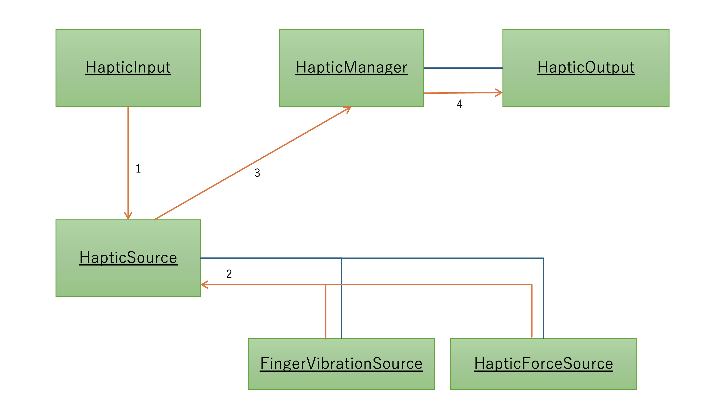

2. FF-SDK-Unity Overiew
2.1. How to playback haptic

FF-SDK-Unity Haptics Playback Flowchart
2.1.1. Base components
FF-SDK-Unity provides these components below.
| Component | Function |
|---|---|
| HapticInput | Haptic input point ex.) The fingertips of the thumb or index finger |
| HapticSource | Objects that generates haptic feedback FingerVibrationSource that emits vibrations and HapticForceSource that calculates shear strength are under this component |
| HapticsOutput | Devices that output haptics ex.) FeelFuse devices or siumilators |
| HapticsManager | Components that control haptics from input to output |
2.1.2. Flow from haptic input to output
- HapticInput interfere with HapticSource.
- HapticSource gets haptic parameters (such as vibration audio clips and the drive amount of motors for playbacking shear) calculated from FingerVibrationSource and HaticForceSource. HapticSource obtains FingerVibrationSource and haptic paramater calculated from HaticForceSource (vibration sound clip or motion output of motor for shear playback)
- HapticeSource transfers haptic paramater to HapticsManager.
- HapticeSource transfers haptic paramater to HapticsInput. HapticsOutput playbacks haptic by FeelFuse devices and so on.
2.2. Package layout
FF-SDK-Unity package includes the following.
| Package | Content |
|---|---|
| Core | SDK core feature |
| MetaXR | Feature that integrate with Meta XR SDK |
| TofAR | Feature that integrate with ToF AR SDK（Development and debugging support） |
| Samples | Sample scenes |
| Windows | USB wired connection version package for FeelFuse. There is a dependecy on paid assets. |
2.3. Folder layout
The folder layout when FF-SDK-Unity package are all imported is as follows:
| Folder | Package | Content |
|---|---|---|
| Commissure/HapticsSystem/Core | Core | FF-SDK-Unity ore feature Essential files for SDK operation |
| Commissure/HapticsSystem/Devices | Core | Device-dependent function |
| Commissure/HapticsSystem/UI | Core | UI development helper |
| Commissure/HapticsSystem/UI.MetaXR | MetaXR | Meta XR SDK-dependent UI development helper |
| Commissure/HapticsSystem/UI.TofAr | TofAR | ToF AR SDK-dependent UI development helper |